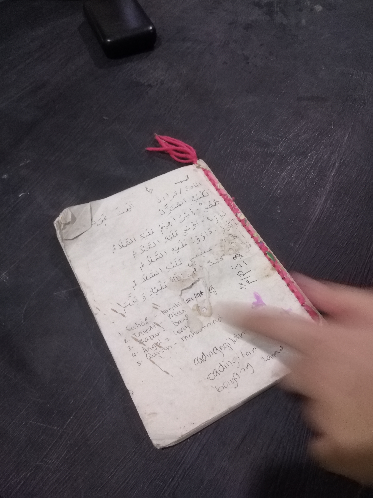
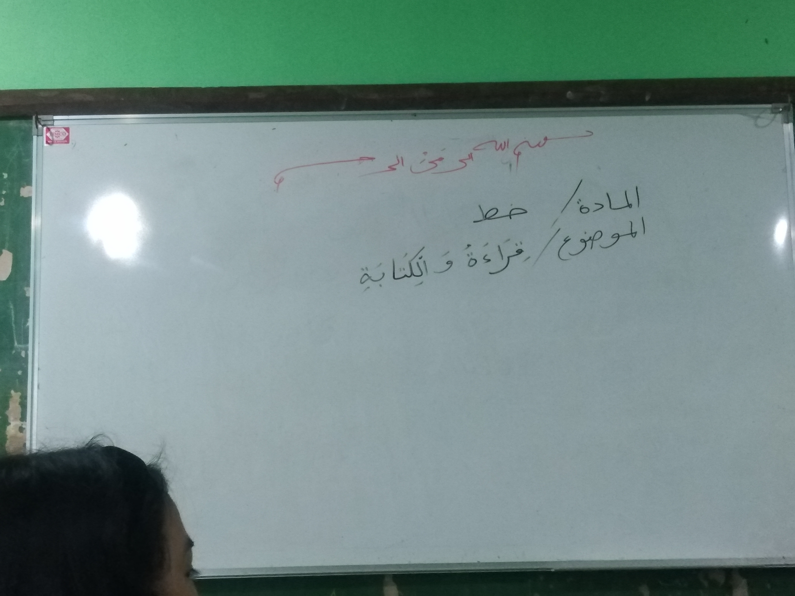

Project Background
Project Summary:

Our group would like to help the institution from the scarcity of their school supplies. If we were able to support or help them with this problem it would most likely solve one of their biggest issues. Lack of school supplies is one of our partner Institution’s problems because without these their students aren't gonna learn properly if their learning is not supported with basic school necessities such as notebooks, pencils, erasers, and many more, So our group proposed a project where we donate our old usable school supplies. Ateneo has been giving us a lot of blessings every grading such as a bag of school supplies every art class in every grading, mostly this bag of art supplies isn't really used because we only use one stuff from time to time so with these unused supplies were going to donate them to the kids of the Institution. If we're able to do this project successfully then our institution's students won't have any problem with the lack of school supplies while they're learning. With our budget of 5,000 pesos, we can buy food or snacks for 100 more families of the Madrasah community while we're doing our Project program.
Community Profile:

Traditional Madrasah or Weekend Madrasah is a type of madrasah in Davao that provides basic Islamic instruction to Muslim children. Madrasah or more relatively what has evolved in the present times as center in every Muslim Community is guided by the principle of investing in the foundational religious education of Muslim children. By equipping the Madrasah student with the core knowledge and analytical tools of Islamic education, it is understood that they will be able to develop a firm sense of identity with his or her beliefs and values to better meet the social challenges of our times. Likewise, the Madrasah system of education seeks to provide the necessary intellectual framework and judgment to enable each Muslim student to make the considered and informed choice consistent to Islamic spiritual and moral norms.
Rationale:
The project is significant because it will serve as a pathway for kids who are undereducated in the aforementioned institution. The project will assist in supplying the facility with the necessary resources for the kids and staff to use. With our project, there is a good chance that many in our community will be inspired to support our partner institutions in the same way. The project we're planning will benefit both of the participating institutions.
Project Objectives:
Our proposed project will give used school supplies to madrasa students to strengthen them so they won't struggle as much to acquire supplies for their pupils and they can focus on other resources to support their school. To be able to at least offer certain implements for their pupils to use in their classes is one of our goals. Additionally, we wish to amuse them so they may unwind. We are starting a contribution drive to help the students at the madrasah because it is still difficult to assist madrasah students, our success rate is around 60%. We've sparked and done action where they could see us preparing for it, so we don't want them to keep hoping in vain. This project will have a significant impact on their ability to learn. They'll also get the impression that they aren't being treated as a burden and that others are prepared to provide financial support so they can continue their education. The Ateneo de Davao University seeks to develop its students into good citizens who will serve their community and nation, and this project is in accordance with that mission and we hope that this project will be successful if we have enough funds.
Project Proposal
Preparation:
Sell Homemade and handmade stuffs to sell to have our own budget, Prepare the donation packages that we would donate to the students in the Institution, and Pack a small good offering food for all 1000 families in the institution.
During Implementation:
Budget the money we had after selling, and Evaluate and solve how much each supplies cost within our budget.
Post Implementation :
To do more donation drives but in different places and needs.
Budget Projection
Monetary:
We’ll be getting money from adults as well as support for our project and we’ll have our own hard-worked money that we made.
In Kind:
As I said we’ll still be getting support from the adults who may be our parents or our guardians to support our self-made project.
Human Resources:
With this being said the people who we sold the goods would have a smile on their faces with satisfactory of having the stuff they bought from us, with the money we got from selling we will be saving it up to add up to our budget.